Candidates
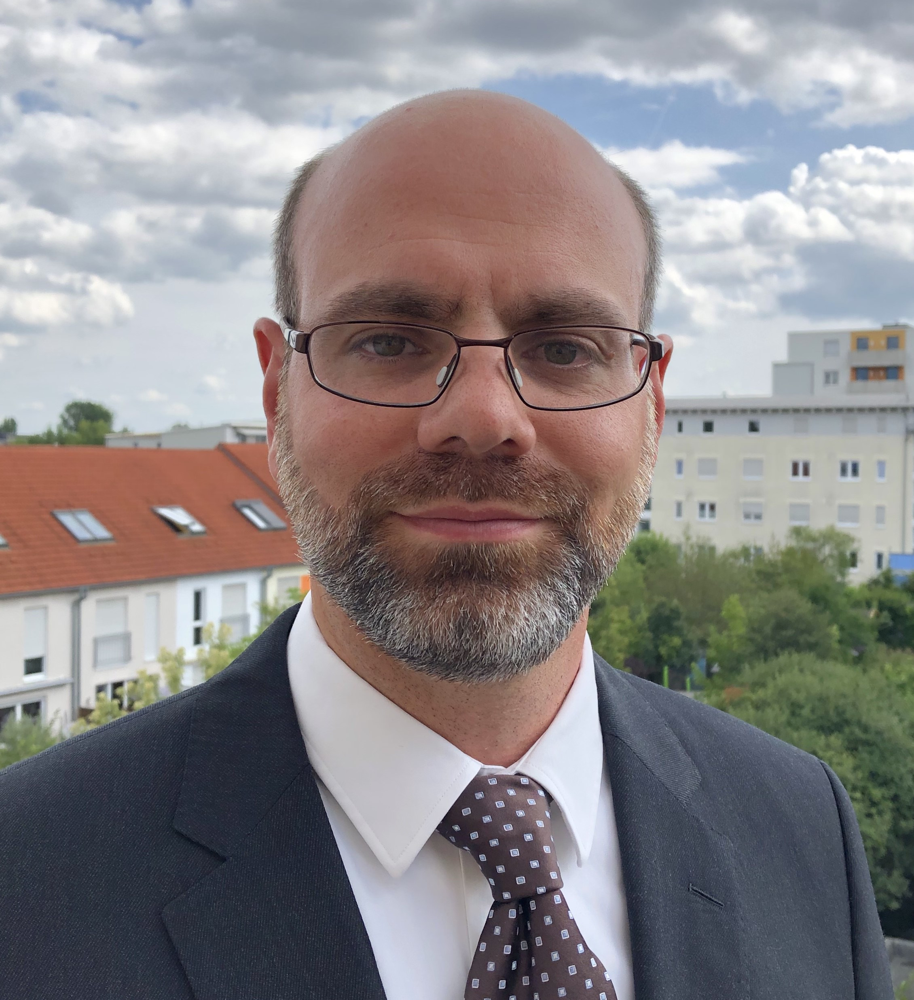
Name:
Philipp Christophel
Affiliation: SAS Institute Inc.
Research topics: MIP solver development, simplex solver development, cutting planes
Webpage:
LINK
In my opinion, the MIP Workshop is the most valuable conference in our field. I attended 12 of the 19 MIP Workshops so far, gave invited talks at two of them (2012 in Davis and 2017 in Montréal), and was a member of the program committee 2018 at Clemson. It is especially important for me that the MIP Workshop continues to feature practical applications and implementational aspects of mixed integer programming solvers. Our field has a long history of successfully transferring theorems and ideas from academics into very successful commercial and open source software products. I think the MIP Workshop should foster and extend this collaboration as much as it can.
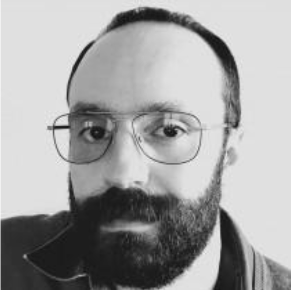
Name:
Stefano Coniglio
Affiliation: University of Bergamo
Research topics: Mixed Integer Linear (and sometimes Nonlinear) Programming, Bilevel Programming, Combinatorial Optimization
Webpage:
LINK
I've been a MIPper since my PhD (2008-2011) and there's a bit of MIPping to every bit of research I do. My work (published in, e.g., MathProg, Algorithmica, EJOR) is both methodological and applied and some of it (appeared in e.g., IJCAI, AAAI, AI Journal) also touches on topics of AI, game theory, and ML. I have experience with the industry thanks to working with 20+ companies in research projects and student supervision across Italy, Germany, and the UK. While a MIPper at heart, I have a good grasp of the main research trends of the ever-growing AI/ML community and, if elected, I would strive to facilitate its collaboration with the MIP community, working to promote MIP techniques within mathematical optimization, data science, and machine learning.
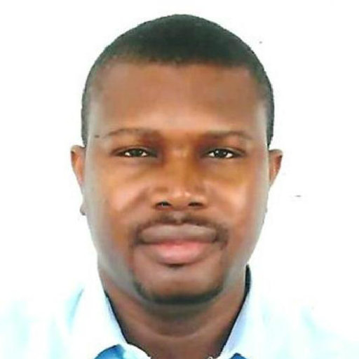
Name:
Déthié Dione
Affiliation: University of Gaston Berger
Research topics: Linear programming, NonLinear Programming and Mixed Linear programming
Webpage:
LINK
Federated all the international community of specialists of the whole mixed programming, in order to have strong extended collaborations.
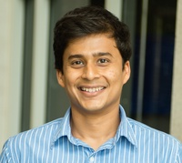
Name:
Akshay Gupte
Affiliation: University of Edinburgh
Research topics: Theory, algorithms, and applications of nonconvex optimization
Webpage:
LINK
I worked with a few other people to draft the bylaws and have this society created. So I will be happy to sit on its board and help steer it for the first couple of years. I have been an active member of the MIP community for a decade, and have also organised the MIP workshop once.
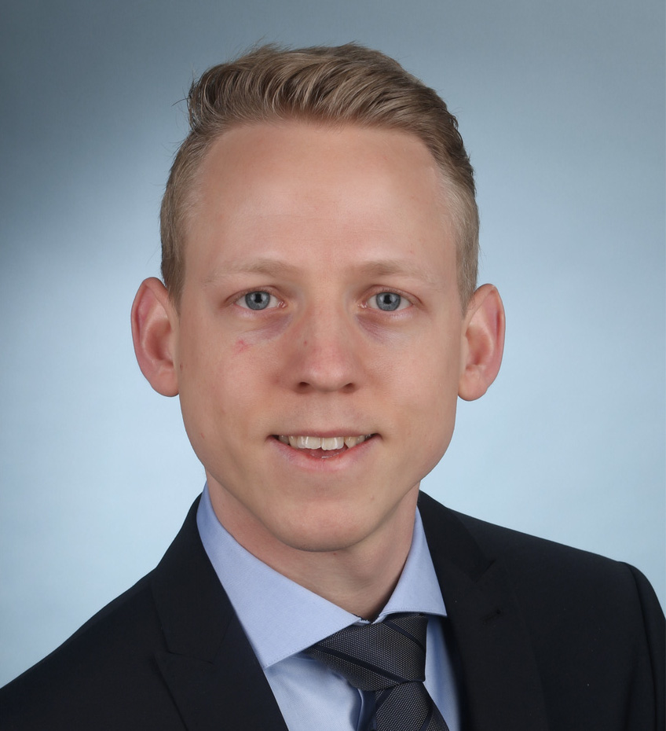
Name:
Christopher Hojny
Affiliation: Eindhoven University of Technology
Research topics: symmetry handling in MIP; relations between different
properties of IP formulations (number of inequalities, size of
coefficients, etc.); developing efficient MIP software for solving
optimization problems
Webpage:
LINK
I have always enjoyed to actively contribute to the MIP community by
co-developing the MIP solver SCIP and co-organizing conferences such as
IPCO 2022. With my candidature, I want to extend my contribution to the
community. If elected, my aim is to listen to all members of MIPS about
their ideas, needs, and opinions. In particular, I want to make sure
that decisions of COMIPS serve the interests of both applied and
theoretical MIPS members. Among others, I want to foster interaction of
MIPS members via the creation of suitable web platforms to centrally
share, e.g., sophisticated MIP tools, and supporting organizing online
seminars.
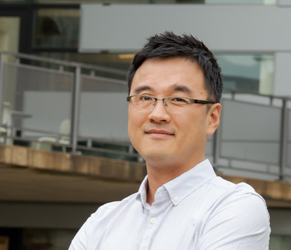
Name:
Kibaek Kim
Affiliation: Argonne National Laboratory
Research topics: Large-scale optimization, stochastic programming, decomposition methods
Webpage:
LINK
It is my honor to be nominated as a candidate. Working at a national lab in the US, I expect myself to serve as a COMIPS member by bringing unique researchers and perspectives to the MIP society within and outside academia in particular. In addition to leading multidisciplinary science and engineering projects at Argonne, I collaborate with other national labs and academia and also advise a number of postdoctoral appointees and Ph.D. students for research on algorithms, computations, and applications for stochastic MIP. With my experience, I would be able to make positive contributions and interactions to MIPS at large.
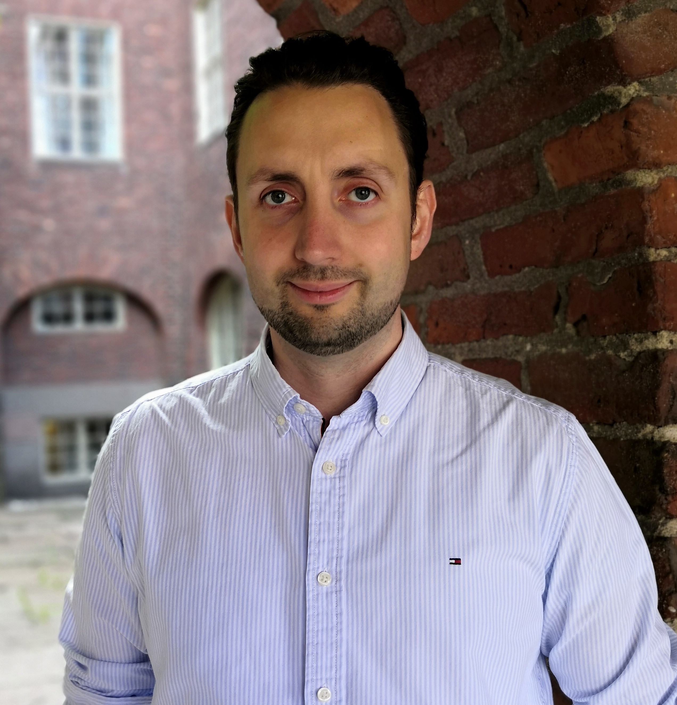
Name:
Jan Kronqvist
Affiliation: KTH Royal Institute of Technology, Stockholm, Sweden
Research topics: Mixed-integer nonlinear programming, disjunctive programming, solver development
Webpage:
LINK
Mixed-integer programming (MIP), and especially nonlinear MIP, is my main research passion. My work in MIP focus on efficient algorithms and techniques, strong formulations, and software. I would be thrilled to be on the committee and work towards strengthening the MIP society. The MIP community is active, and I think it is very important that the MIP society is welcoming to all new members and forms a global community. The MIP community has a friendly atmosphere, which I hope the MIP society can further nurture. I also hope the MIP society can work towards supporting young MIP researchers.
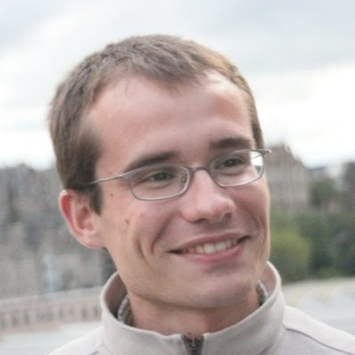
Name:
Jakub Marecek
Affiliation: Czech Technical University
Research topics: Design and analysis of algorithms for optimisation and control problems across a range of application domains
Webpage:
LINK
Jakub Marecek received the Ph.D. degree for his work on exploiting structure in integer programming from the University of Nottingham, Nottingham, U.K., in 2012. He has been a faculty member at the Czech Technical University in Prague, the Czech Republic, since 2020. He had also worked in two start-ups, at ARM Ltd., at the University of Edinburgh, at the University of Toronto, at IBM Research – Ireland, and at the University of California, Los Angeles. He has coauthored more than 17 journal and 40 conference papers. He is a co-inventor on 9 families of awarded U.S. patents and several pending patent applications. If elected to the COMIPS, he would like to promote diversity.
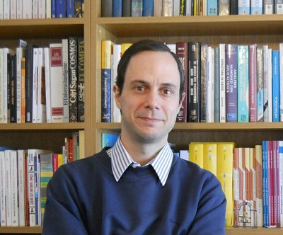
Name:
Javier Marenco
Affiliation: University of Buenos Aires, Argentina
Research topics: integer programming, polyhedral combinatorics, applications of OR
Webpage:
LINK
I'm enthusiastic about the creation of MIPS, and I would like to collaborate with this initiative!
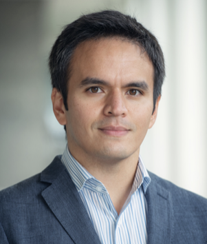
Name:
Joseph Paat
Affiliation: University of British Columbia - Sauder School of Business
Research topics: Mixed integer programming, polyhedral combinatorics, parameterized complexity
Webpage:
LINK1,
LINK2
There are many entrance points for students to engage in MIP research, whether it be a real-world application or a connection to engineering or math. I believe this `ease of engagement' makes the MIP community welcoming to newcomers. The MIP community is reflected in events such as the MIP workshop --- I have attended most of the MIP Workshops since I was student, and I am on the organizing committees for the 2023 MIP Workshop and the MIP2023 computational competition. One of the duties of COMIPS is to organize this engagement in the future for both new students and current members; this is why I would like to be involved with COMIPS.
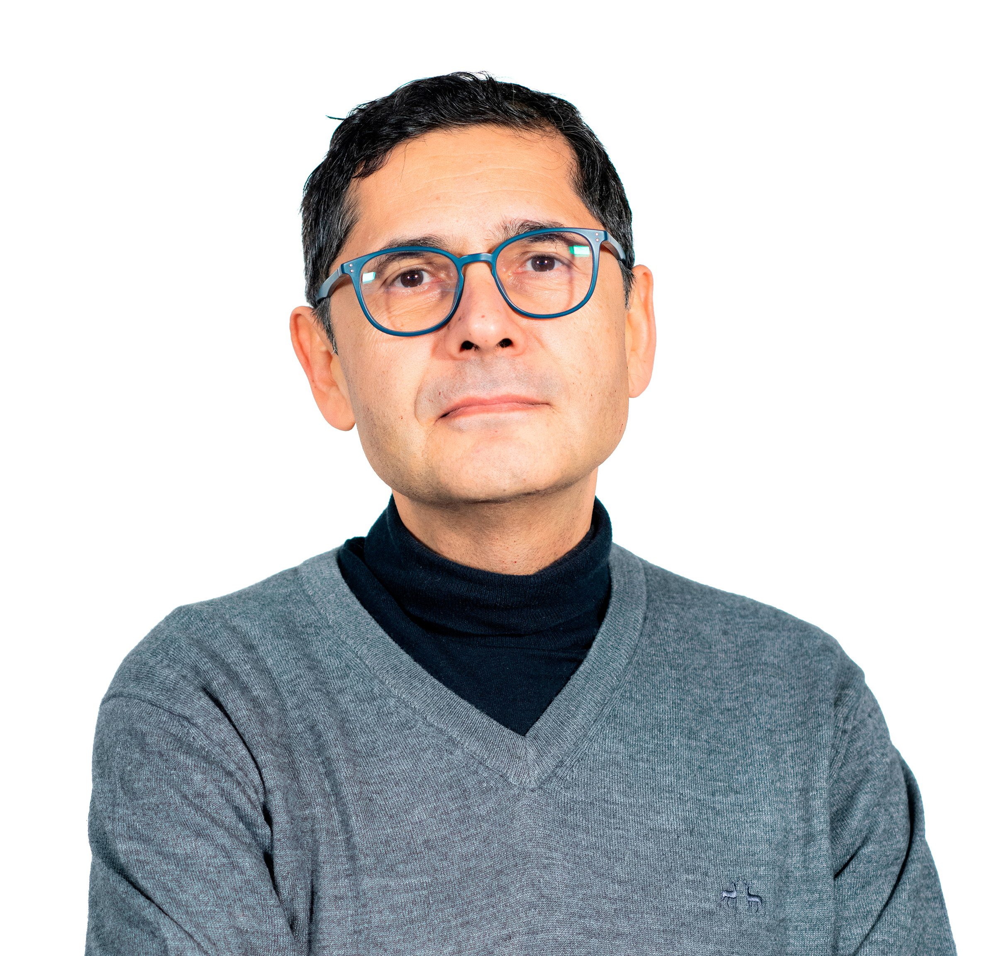
Name:
Mustafa Pinar
Affiliation: Bilkent University
Research topics: robust optimization, applications in economics and finance, sparsity constrained optimization
Webpage:
LINK
I have been a member of Math Prog community since 1988 through which I had successful university career. I would like to pay back by offering some service to the community after 35 years by contributing to uphold the values and maintain the quality of journals, meetings and other services.
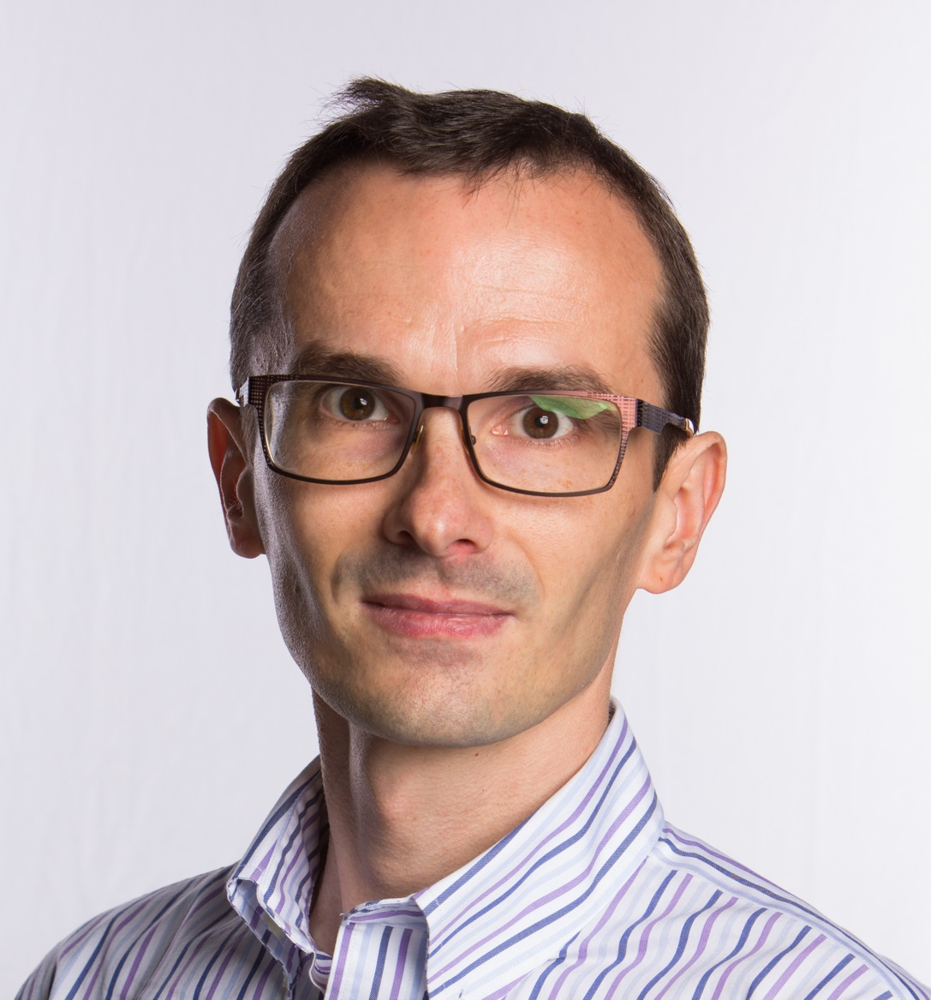
Name:
Imre Polik
Affiliation: FICO Xpress
Research topics: presolver techniques for mixed-integer optimization; duality based techniques in optimization; semidefinite optimization
Webpage:
LINK
My goal is to represent the interests and objectives of the commercial participants and to foster collaboration between academia and the solver development industry.
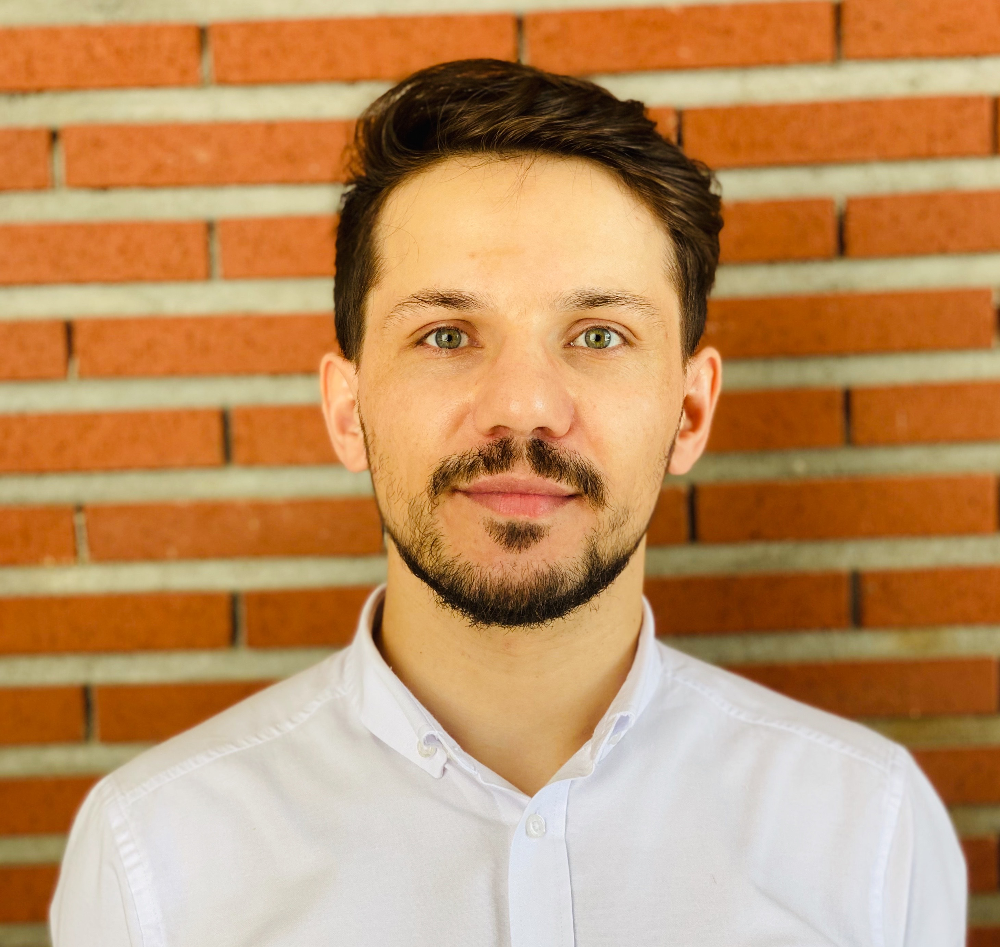
Name:
Nozir Shokirov
Affiliation: Sabanci University
Research topics: Routing problems in health care, Machine learning for combinatorial optimization.
Webpage:
LINK
Reason for running: To get more involved with the MIP community and attract more researchers from underrepresented communities. Take part in popularizing OR techniques to a broader community.
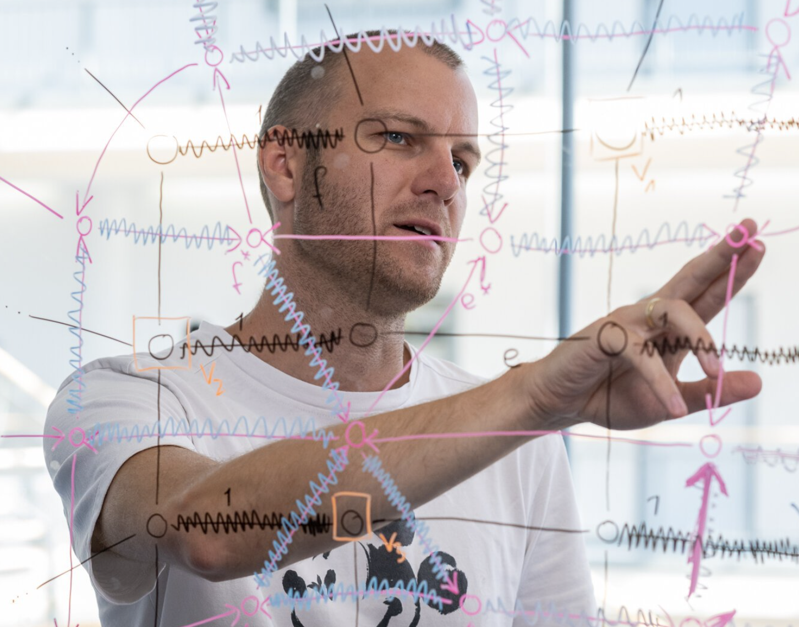
Name:
Stefan Weltge
Affiliation: Technical University of Munich
Research topics: linear and integer programming, polyhedral combinatorics, combinatorial optimization.
Webpage:
LINK
The MIP community is a great scientific home to me and many colleagues, and I believe that it is very important to not only work on its continuity but also on its outreach. I would be very happy to support MIPS, for instance in technical aspects regarding websites and web activities.
Name:
Yu Yang
Affiliation: University of Florida
Research topics: Exact Methods for Vehicle Routing Related Problems; Machine Learning for Combinatorial Optimization; Treatment Planning Optimization for Radiotherapy.
Webpage:
LINK
The MIP Workshop is an excellent opportunity for researchers working on MIP, including myself, to learn about the newest research findings and exchange ideas. I have been doing research on novel branching strategies for accelerating the solution of MIPs, possibly with the help of machine learning. I am also exploring the possibility of tailoring specific MIP solution techniques to the solution framework of VRPs. I am eager to serve on the COMIPS to help ensure the continuity of the MIP Workshop and facilitate communication among members of our community.